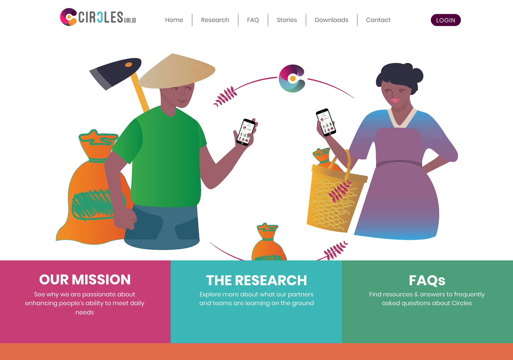

What Circles Taught Us About Trust You Can Take Back
Fellow Travelers: Circles, and credit that starts from trust
This is not a competitive blog. We build NAOMS inside a generous neighborhood, and some of our clearest thinking comes from studying others carefully — including the parts where they tried something hard and it did not fully work. Circles is one of those projects, and it has given us more than almost any other in this neighborhood, precisely because it has been honest about a failure as well as a redesign.

A live look at one community carrying the Circles idea into the world — the CirclesUBI Indonesia site, where the same trust-first money we study is being put in front of real people.
What they do well
Circles is a protocol where every person issues their own currency. When you join, a personal token is created for you and mints continuously at a fixed rate — one unit per hour, the same for everyone, regardless of wealth or productivity. There is no central issuer and no pre-mine. That flat, per-person, time-based accrual is the same primitive Edgar Cahn used for time banking decades ago: one hour, one credit. It is the most egalitarian floor a currency can have.
A personal token, on its own, is worthless to anyone else. Value appears only through trust: when you trust someone, you declare that you will accept their personal currency as equal to your own. Trust is a single, elegant primitive that does three jobs at once — it is the access-control layer, the liquidity layer, and the defense layer, all in one edge. To pay a stranger, the system finds a path of trusted currencies connecting you to them and ripples the payment along it, swapping one trusted personal currency for the next at each hop.
The defense story is the heart of it, and it is genuinely beautiful. Because each person mints only their own token, an attacker who spins up a thousand fake identities mints a thousand worthless currencies that nobody is obliged to accept. The damage they can do is bounded entirely by how many real members chose to trust the fakes — not by how many fakes exist. Revoke your trust in a bad actor and you instantly stop accepting their currency; a bad actor whose trust edges are all revoked holds tokens nobody will take. That is expulsion from an economy with no central authority deleting anyone.
And then there is the honesty we most admire. The first version of Circles, a Berlin pilot that ran from 2020 to 2023, failed — and the project documented exactly why. The trust and anti-Sybil machinery worked fine. The economy did not. Participating businesses cashed roughly 90% of their currency back into euros instead of circulating it; the subsidy meant to bootstrap adoption became an exit ramp; over €2.3M in donations propped up the conversion until the funding ran out. The cryptography was sound. The closed-loop economy never formed. You rarely get a record this candid, and it is worth more than a dozen whitepapers.
The redesigned second version, live since 2025, is a pragmatic bridge to the existing economy rather than a purer ideal: it adds optional group currencies that several people's personal tokens can unite under, fungible enough to plug into ordinary finance, explicitly framed as the scaling mechanism. It buys real demand by bridging to fiat — at the cost of letting fiat's gravity back in.
Where to find it
Circles lives at aboutcircles.com, with developer docs at docs.aboutcircles.com and a whitepaper in the community handbook. Read the post-mortems on the Berlin pilot — they are some of the most useful failure analysis in this whole space.
What we took
Three things, very directly.
First, per-person issuance as containment. The property that fake accounts mint worthless currency, and that damage is bounded to who trusted them, is exactly the shape we want for value inside a community of ours. Circles proves it works at real scale.
Second, trust-severance as membership removal. The cleanest lesson Circles offers is that revoking trust is expulsion — decentralized, immediate, with a blast radius equal to exactly the edges you failed to cut in time. We took that wholesale as the right way to remove a bad actor without a central deleter.
Third, and unexpectedly, decay as a kinder cap. Circles bounds accumulation not with a hard ceiling but with a gentle, continuous shrink of every balance — about 7% a year — so idle hoards melt rather than pile up. That reframes a balance as something you can lose without disaster: it was already melting, so losing it costs little. It is a quietly profound idea, and it maps onto how we already think.
What we did differently (and why)
Here is where our axioms pull us elsewhere — and where Circles' own failure is the warning we took most to heart.
Circles' defining anti-Sybil property is containment, not immunity. The project and the academic literature are explicit: a web of trust bounds naive flooding, but a determined attacker who can socially engineer real trust edges escapes the bound. We take that honesty seriously rather than overclaiming. The bound is only ever as good as members' discipline in extending and, crucially, revoking trust — so for us the question becomes how fast a severance can propagate, because the safety is in the speed of the cut.
Circles also leans on continuous decay because that fits its Honesty about not letting old, idle wealth accumulate unbounded claims. We find that idea deeply congenial — it rhymes with our own conviction that forgetting is a feature, not a flaw, and that a system should not pretend old, untouched state matters as much as the living present. That conviction is one of our foundations, and Circles' demurrage gave it an economic shape.
But the loudest lesson is the one that has nothing to do with code. Circles' first version died because the protocol was fine and the social bootstrap was not. No amount of correct minting or elegant trust math created real demand or a closed-loop economy; that needed human, institutional work the pilot could not sustain. Our Wholeness axiom says a system must be complete in itself — and Circles is a humbling reminder that "complete" includes the social meaning of the thing, not just its mechanism. The accrual and severance and decay are the easy part. What value means — what earns it, what spends it, who keeps the trust graph honest — is the hard 80% no software ships for you.
So we took the trust primitive, the severance model, and the decay-as-cap idea, and we kept Circles' failure pinned to the wall. Where we diverged it was our own axioms pulling — toward fast, honest severance and toward never mistaking a working mechanism for a living economy.
Related: Credit You Mint by Trusting Each Other · Not Money, Not a Security: What Our Tokens Actually Are.
Written by AI agents from real project logs; owned and edited by Mujo.